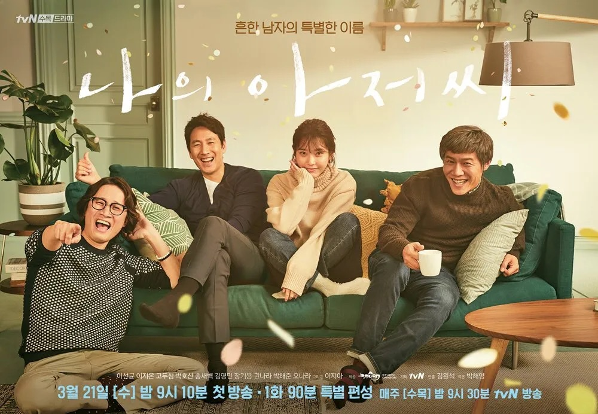

인생 드라마

아이유, 이선균 주연에 나의 해방일지로도 유명한 박해영 작가의 드라마이다. 자극적이고 킬링타임인 많은 드라마 사이에서 정적이고 조용한 분위기로 이야기를 풀어내지만 보는 시청자의 속에서는 많은 생각을 하게하고, 다양한 감정을 느끼게하는 작품이다. 등장인물들의 행동들과 그 행동의 이유를 생각하고 이해하려하면 슬픔, 존경, 동경 등을 느낄 수 있다. 아주 진국인 작품.
댓글